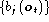
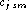
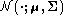
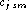
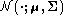

Before the problem of parameter estimation can be discussed in more detail, the form of the output distributions  needs to be made explicit. HTK is designed primarily for modelling continuous parameters using continuous density multivariate output distributions. It can also handle observation sequences consisting of discrete symbols in which case, the output distributions are discrete probabilities. For simplicity, however, the presentation in this chapter will assume that continuous density distributions are being used. The minor differences that the use of discrete probabilities entail are noted in chapter 7 and discussed in more detail in chapter 10.
In common with most other
continuous density HMM systems, HTK represents output distributions
by Gaussian Mixture Densities.
In HTK, however, a further
generalisation is made. HTK allows each observation vector at time t
to be split into a number of S independent data streams . The
formula for computing  is then
is then
where  is the number of mixture components in stream s, 
is the weight of the m'th component and
 is a multivariate Gaussian with
mean vector and covariance matrix ,
that is
is the number of mixture components in stream s, 
is the weight of the m'th component and
 is a multivariate Gaussian with
mean vector and covariance matrix ,
that is
where n is the dimensionality of  .
.
The exponent  is a stream weight
is a stream weight . It
can be used to give a particular stream more emphasis, however,
it can only be set manually. No current HTK training tools
can estimate values for it.
. It
can be used to give a particular stream more emphasis, however,
it can only be set manually. No current HTK training tools
can estimate values for it.
Multiple data streams are used to enable separate modelling of multiple information sources. In HTK, the processing of streams is completely general. However, the speech input modules assume that the source data is split into at most 4 streams. Chapter 5 discusses this in more detail but for now it is sufficient to remark that the default streams are the basic parameter vector, first (delta) and second (acceleration) difference coefficients and log energy.